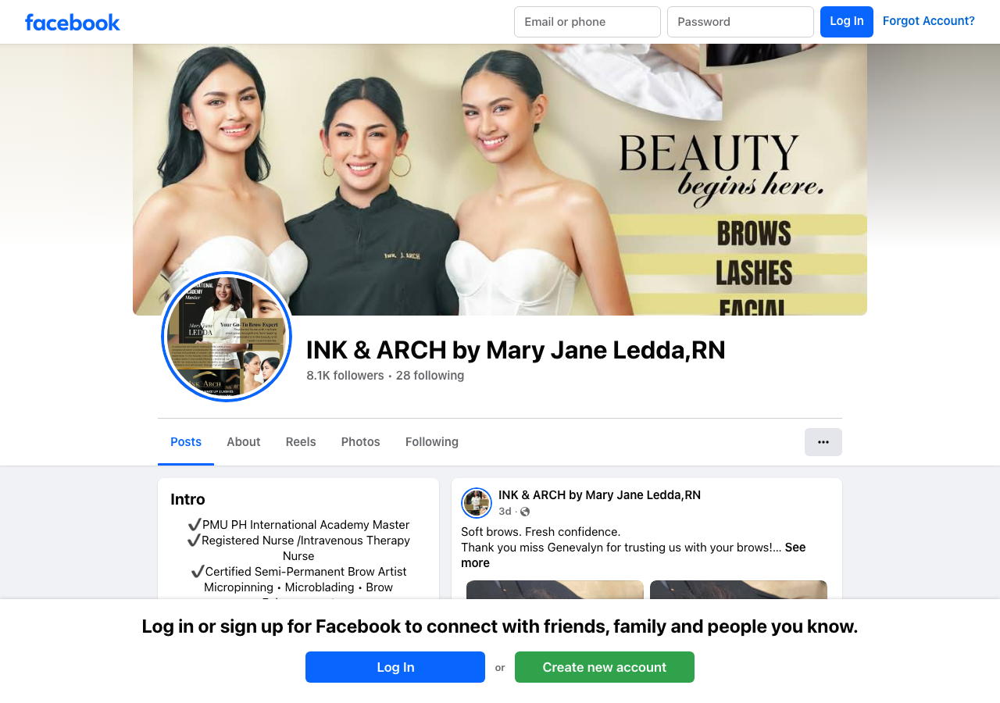
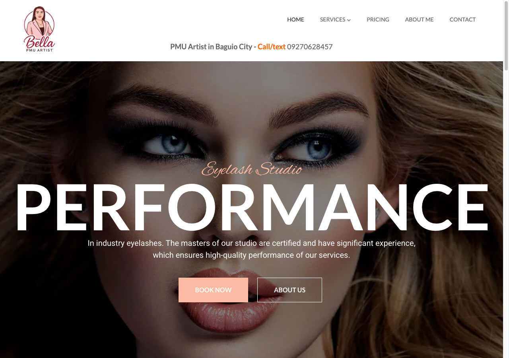
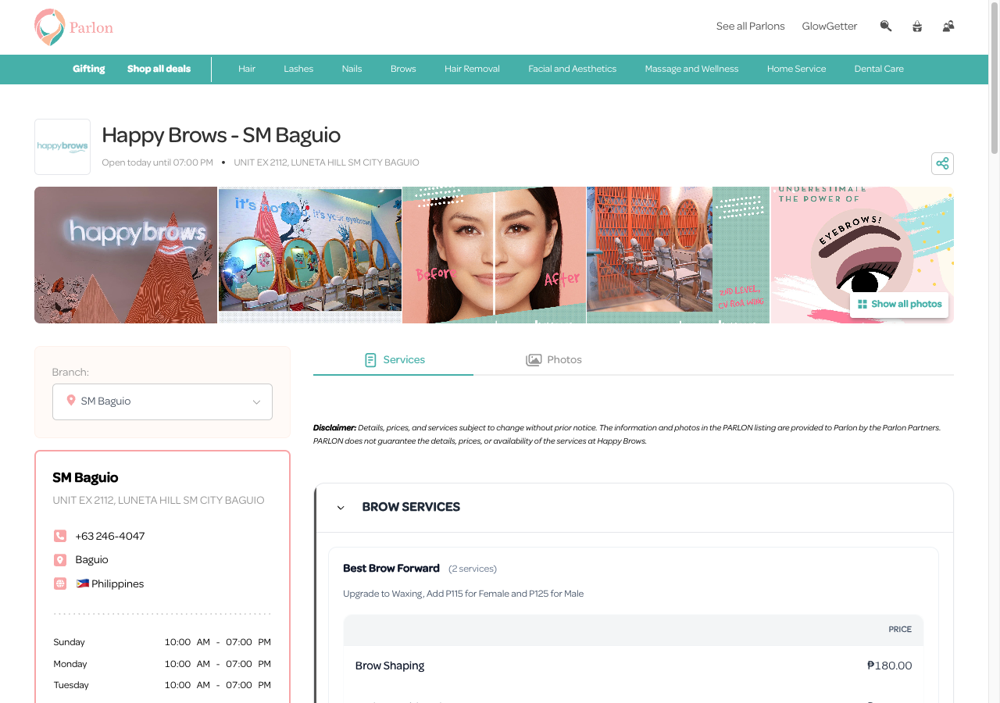

FREE Digital Audit
Prepared May 16, 2026 · All findings verified on public surfaces only
| # | Gap |
|---|---|
| 1 | Patients who search for brow services in Baguio don't find you — your competitors do |
| 2 | No online booking — patients who want to book at night have no way to do it |
| 3 | Not on Parlon — your Baguio brow competitors take bookings there 24/7, you don't appear |
Searching your name finds you. Searching what you do doesn't.

Finding
A Google search for "INK & ARCH Baguio" finds you. But patients who don't already know you — the patients you need to grow — search by service: "brow care in Baguio," "microblading Baguio," "PMU Baguio." On those searches, you do not appear. Dr Brows appears. The Brow Studio appears. Brow Trends Aesthetic Clinic appears. Google's AI Overview names The Brow Studio as a top brow spot in Baguio. You are not mentioned.
Why this matters
What your competitors are doing

Fix
A real website with your services listed gives Google something to index. Combine that with a fully built-out GMB and you compete on every brow and PMU search in Baguio — with a 5.0 rating that most competitors don't have.
Finding
No online booking link was found on any public surface — no website (none exists), no booking CTA on your Facebook page, no Parlon listing, no Calendly link. Patients who want to lock in a microblading or nanopinning slot outside clinic hours have no way to do it. They message on Facebook and wait.
Why this matters
What your competitors are doing

Fix
Get listed on Parlon (parlon.ph) — free. Add a booking link to your Facebook "Book Now" button. From that point, patients can book at any hour with no staff needed.
Finding
A search on Parlon.ph for brow services in Baguio shows Happy Brows (SM City Baguio) and The Brow Studio (SM City Baguio) as bookable options. INK & ARCH does not appear. These are the studios patients compare side by side before choosing who to book.
Why this matters
What your competitors are doing
Fix
Submit your clinic to Parlon (parlon.ph). Free to list. Once live, you appear alongside Happy Brows and The Brow Studio when a patient searches brow services in Baguio.
You already have the best Google rating of any Baguio brow clinic found. The gap is not quality — it is visibility.
INK & ARCH by Mary Jane You
Dr Brows
Brow Trends Aesthetic Clinic
Happy Brows (SM City Baguio)
The Brow Studio (SM City Baguio)
Estimated monthly upside
₱55,000–65,000
Before reaching out to your past patients again
My name is Allen. I build simple AI tools for clinics in the Philippines. I am looking for 3 clinics to be my first partners this month — and the first 3 get everything set up for FREE. No catch.
Here is what I set up for you
A real website — so Google can find you on every PMU and brow search in Baguio, not just when someone already knows your name
Automatic appointment reminders — sent before every session so patients show up
Google review collection — builds on your existing 5.0 rating so more patients see it before choosing
Past patient re-engagement — a simple way to bring back patients you have not seen in a while
Front-desk AI — handles late-night messages, FAQs, and follow-ups so you can focus on patients in the room
My promise to you
2 to 5 new bookings and 2 to 5 new Google reviews in your first month working with me. FREE. No contract. No risk.
The next step is simple.
Just reply to my message →
Find me on Facebook: allenenriquezzz
We can meet in person or talk over a quick call — whatever works for you.